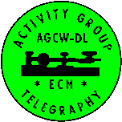
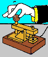

EUROPÄISCHE CW ASSOZIATION
Infos für DL-sprachige Freunde der EUCW

|  |
EUROPÄISCHE CW ASSOZIATIONInfos für DL-sprachige Freunde der EUCW |
|

|
 Deutsche Ausschreibung des EUCW Handtastentages.
Deutsche Ausschreibung der EUCW QRS Party.
Deutsche Ausschreibung des EUCW 160m Kontests.
Deutsche Ausschreibung der EUCW Fraternizing Party.
Deutsche Ausschreibung des WORKED EUCW DIPLOMS.
Archiv der EUCW-Berichte aus der Info:
Einige der Texte enthalten auch Zeitungsenten. Auf diese gibt es am Ende der Texte einen Hinweis.